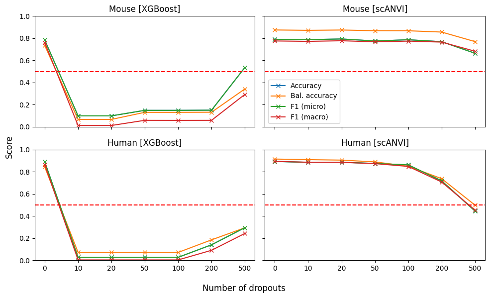

!which pip/projects/dan1/data/Brickman/conda/envs/scvi-1.0.0/bin/pipIn this notebook we compare the accuracy between XGBoost and scANVI
!which pip/projects/dan1/data/Brickman/conda/envs/scvi-1.0.0/bin/pip%matplotlib inline
import scvi
import xgboost as xgb
import pandas as pd
import numpy as np
import seaborn as sns
import scanpy as sc
from tqdm import tqdm
import matplotlib.pyplot as plt
from typing import Tuple
from numba.core.errors import NumbaDeprecationWarning, NumbaPendingDeprecationWarning
import warnings
warnings.simplefilter('ignore', category=NumbaDeprecationWarning)
warnings.simplefilter('ignore', category=NumbaPendingDeprecationWarning)
warnings.simplefilter('ignore', category=FutureWarning)
warnings.simplefilter('ignore', category=UserWarning)
scvi.settings.seed = 0
import os
os.environ['CUDA_VISIBLE_DEVICES'] = '3'/projects/dan1/data/Brickman/conda/envs/scvi-1.0.0/lib/python3.10/site-packages/scvi/_settings.py:63: UserWarning: Since v1.0.0, scvi-tools no longer uses a random seed by default. Run `scvi.settings.seed = 0` to reproduce results from previous versions.
self.seed = seed
/projects/dan1/data/Brickman/conda/envs/scvi-1.0.0/lib/python3.10/site-packages/scvi/_settings.py:70: UserWarning: Setting `dl_pin_memory_gpu_training` is deprecated in v1.0 and will be removed in v1.1. Please pass in `pin_memory` to the data loaders instead.
self.dl_pin_memory_gpu_training = (
[rank: 0] Global seed set to 0import anndata
from sklearn.metrics import accuracy_score, balanced_accuracy_score, f1_score
def cripple_classifiers(adata: anndata.AnnData, lvae: scvi.model.SCANVI, xgb_clf: xgb.XGBClassifier, groupby: str):
"""
To prove a point that scANVI is better in term of prediction compared to XGBoost
due to it's ability to use full list of HVGs, we sort features (genes) based on
their normalized dispertion and remove them during prediction.
We expect that if they are not present the XGBoost performance double downs on its
performance as it will be missing these features to make a correct prediction.
"""
denoised = lvae.get_normalized_expression(return_mean=True)
features = adata.var.sort_values(by='dispersions_norm', ascending=False).index
metrics = {
'scANVI': { m: [] for m in ['accuracy', 'balanced', 'f1_micro', 'f1_macro'] },
'XGBoost': { m: [] for m in ['accuracy', 'balanced', 'f1_micro', 'f1_macro'] }
}
for i in tqdm([0, 10, 20, 50, 100, 200, 500]):
less_features = features[i:]
# XGBoost prediction
xgb_denoised = denoised.copy()
if i != 0:
xgb_denoised.loc[:, less_features] = 0
xgb_pred = xgb_clf.predict(xgb_denoised)
# scANVI query
subset = adata[:, less_features].copy()
subset.obs = subset.obs[['batch']].copy()
scvi.model.SCANVI.prepare_query_anndata(subset, lvae)
lvae_q = scvi.model.SCANVI.load_query_data(subset, lvae)
lvae_q.train(max_epochs=100, plan_kwargs=dict(weight_decay=0.0), check_val_every_n_epoch=10, enable_progress_bar=False)
scANVI_pred = lvae_q.predict()
metrics['scANVI']['accuracy'].append(accuracy_score(adata.obs[groupby], scANVI_pred))
metrics['XGBoost']['accuracy'].append(accuracy_score(adata.obs[groupby].cat.codes.values, xgb_pred))
metrics['scANVI']['balanced'].append(balanced_accuracy_score(adata.obs[groupby], scANVI_pred))
metrics['XGBoost']['balanced'].append(balanced_accuracy_score(adata.obs[groupby].cat.codes.values, xgb_pred))
metrics['scANVI']['f1_micro'].append(f1_score(adata.obs[groupby], scANVI_pred, average="micro"))
metrics['XGBoost']['f1_micro'].append(f1_score(adata.obs[groupby].cat.codes.values, xgb_pred, average="micro"))
metrics['scANVI']['f1_macro'].append(f1_score(adata.obs[groupby], scANVI_pred, average="macro"))
metrics['XGBoost']['f1_macro'].append(f1_score(adata.obs[groupby].cat.codes.values, xgb_pred, average="macro"))
return metrics# base dataset
mouse = sc.read("../results/02_mouse_integration/scanvi_ns_15/adata.h5ad")
# XGBoost
mouse_xg_scVI = xgb.XGBClassifier()
mouse_xg_scVI.load_model("../results/02_mouse_integration/05_scVI_xgboost.json")
# scANVI
mouse_scANVI = scvi.model.SCANVI.load("../results/02_mouse_integration/scanvi_ns_15/")INFO File ../results/02_mouse_integration/scanvi_ns_15/model.pt already downloaded mouse_stats = cripple_classifiers(mouse, mouse_scANVI, mouse_xg_scVI, groupby='ct') 0%| | 0/7 [00:00<?, ?it/s]GPU available: True (cuda), used: True
TPU available: False, using: 0 TPU cores
IPU available: False, using: 0 IPUs
HPU available: False, using: 0 HPUs
LOCAL_RANK: 0 - CUDA_VISIBLE_DEVICES: [3]
`Trainer.fit` stopped: `max_epochs=100` reached.
14%|██████████████▌ | 1/7 [00:19<01:57, 19.50s/it]GPU available: True (cuda), used: True
TPU available: False, using: 0 TPU cores
IPU available: False, using: 0 IPUs
HPU available: False, using: 0 HPUs
LOCAL_RANK: 0 - CUDA_VISIBLE_DEVICES: [3]
`Trainer.fit` stopped: `max_epochs=100` reached.
29%|█████████████████████████████▏ | 2/7 [00:39<01:37, 19.59s/it]GPU available: True (cuda), used: True
TPU available: False, using: 0 TPU cores
IPU available: False, using: 0 IPUs
HPU available: False, using: 0 HPUs
LOCAL_RANK: 0 - CUDA_VISIBLE_DEVICES: [3]
`Trainer.fit` stopped: `max_epochs=100` reached.
43%|███████████████████████████████████████████▋ | 3/7 [00:59<01:19, 19.78s/it]GPU available: True (cuda), used: True
TPU available: False, using: 0 TPU cores
IPU available: False, using: 0 IPUs
HPU available: False, using: 0 HPUs
LOCAL_RANK: 0 - CUDA_VISIBLE_DEVICES: [3]
`Trainer.fit` stopped: `max_epochs=100` reached.
57%|██████████████████████████████████████████████████████████▎ | 4/7 [01:19<00:59, 19.93s/it]GPU available: True (cuda), used: True
TPU available: False, using: 0 TPU cores
IPU available: False, using: 0 IPUs
HPU available: False, using: 0 HPUs
LOCAL_RANK: 0 - CUDA_VISIBLE_DEVICES: [3]
`Trainer.fit` stopped: `max_epochs=100` reached.
71%|████████████████████████████████████████████████████████████████████████▊ | 5/7 [01:39<00:39, 19.85s/it]GPU available: True (cuda), used: True
TPU available: False, using: 0 TPU cores
IPU available: False, using: 0 IPUs
HPU available: False, using: 0 HPUs
LOCAL_RANK: 0 - CUDA_VISIBLE_DEVICES: [3]
`Trainer.fit` stopped: `max_epochs=100` reached.
86%|███████████████████████████████████████████████████████████████████████████████████████▍ | 6/7 [01:58<00:19, 19.85s/it]GPU available: True (cuda), used: True
TPU available: False, using: 0 TPU cores
IPU available: False, using: 0 IPUs
HPU available: False, using: 0 HPUs
LOCAL_RANK: 0 - CUDA_VISIBLE_DEVICES: [3]
`Trainer.fit` stopped: `max_epochs=100` reached.
100%|██████████████████████████████████████████████████████████████████████████████████████████████████████| 7/7 [02:19<00:00, 19.90s/it]INFO Found 100.0% reference vars in query data.
INFO Training for 100 epochs.
INFO Found 99.66666666666667% reference vars in query data.
INFO Training for 100 epochs.
INFO Found 99.33333333333333% reference vars in query data.
INFO Training for 100 epochs.
INFO Found 98.33333333333333% reference vars in query data.
INFO Training for 100 epochs.
INFO Found 96.66666666666667% reference vars in query data.
INFO Training for 100 epochs.
INFO Found 93.33333333333333% reference vars in query data.
INFO Training for 100 epochs.
INFO Found 83.33333333333334% reference vars in query data.
INFO Training for 100 epochs. %run ../scripts/helpers.py# base dataset
human = sc.read("../results/02_human_integration/05_scanvi_ns15/adata.h5ad")vae = scvi.model.SCVI.load("../results/02_human_integration/scvi/")
vae_df = pd.DataFrame(vae.get_normalized_expression(return_mean=True))
vae_df['target'] = human.obs.C_scANVI_nsamples
X_train, y_train, X_test, y_test = train_test_split_by_group(vae_df)
vae_xgboost = train_xgboost(vae_df, X_train, y_train, X_test, y_test)
vae_xgboost.save_model("../results/02_human_integration/11_scVI_xgboost.json")INFO File ../results/02_human_integration/scvi/model.pt already downloaded
[0] validation_0-merror:0.06048 validation_0-mlogloss:1.25520 validation_1-merror:0.22081 validation_1-mlogloss:1.52118
[1] validation_0-merror:0.03240 validation_0-mlogloss:0.89775 validation_1-merror:0.18471 validation_1-mlogloss:1.22860
[2] validation_0-merror:0.01674 validation_0-mlogloss:0.66799 validation_1-merror:0.18471 validation_1-mlogloss:1.04108
[3] validation_0-merror:0.01242 validation_0-mlogloss:0.50784 validation_1-merror:0.16985 validation_1-mlogloss:0.89968
[4] validation_0-merror:0.00756 validation_0-mlogloss:0.39042 validation_1-merror:0.16561 validation_1-mlogloss:0.79915
[5] validation_0-merror:0.00486 validation_0-mlogloss:0.30346 validation_1-merror:0.16348 validation_1-mlogloss:0.71425
[6] validation_0-merror:0.00162 validation_0-mlogloss:0.23622 validation_1-merror:0.15711 validation_1-mlogloss:0.64952
[7] validation_0-merror:0.00108 validation_0-mlogloss:0.18595 validation_1-merror:0.16136 validation_1-mlogloss:0.60371
[8] validation_0-merror:0.00000 validation_0-mlogloss:0.14786 validation_1-merror:0.15287 validation_1-mlogloss:0.56304
[9] validation_0-merror:0.00000 validation_0-mlogloss:0.11881 validation_1-merror:0.15287 validation_1-mlogloss:0.53307
[10] validation_0-merror:0.00000 validation_0-mlogloss:0.09605 validation_1-merror:0.14650 validation_1-mlogloss:0.50828
[11] validation_0-merror:0.00000 validation_0-mlogloss:0.07801 validation_1-merror:0.14437 validation_1-mlogloss:0.48943
[12] validation_0-merror:0.00000 validation_0-mlogloss:0.06405 validation_1-merror:0.14650 validation_1-mlogloss:0.47413
[13] validation_0-merror:0.00000 validation_0-mlogloss:0.05343 validation_1-merror:0.14225 validation_1-mlogloss:0.46252
[14] validation_0-merror:0.00000 validation_0-mlogloss:0.04508 validation_1-merror:0.14013 validation_1-mlogloss:0.45311
[15] validation_0-merror:0.00000 validation_0-mlogloss:0.03852 validation_1-merror:0.13376 validation_1-mlogloss:0.44334
[16] validation_0-merror:0.00000 validation_0-mlogloss:0.03314 validation_1-merror:0.13588 validation_1-mlogloss:0.43681
[17] validation_0-merror:0.00000 validation_0-mlogloss:0.02886 validation_1-merror:0.13376 validation_1-mlogloss:0.43222
[18] validation_0-merror:0.00000 validation_0-mlogloss:0.02532 validation_1-merror:0.13376 validation_1-mlogloss:0.42889
[19] validation_0-merror:0.00000 validation_0-mlogloss:0.02246 validation_1-merror:0.13376 validation_1-mlogloss:0.42132
[20] validation_0-merror:0.00000 validation_0-mlogloss:0.02018 validation_1-merror:0.13163 validation_1-mlogloss:0.42073
[21] validation_0-merror:0.00000 validation_0-mlogloss:0.01824 validation_1-merror:0.13800 validation_1-mlogloss:0.41866
[22] validation_0-merror:0.00000 validation_0-mlogloss:0.01658 validation_1-merror:0.13163 validation_1-mlogloss:0.41665
[23] validation_0-merror:0.00000 validation_0-mlogloss:0.01526 validation_1-merror:0.13376 validation_1-mlogloss:0.41581
[24] validation_0-merror:0.00000 validation_0-mlogloss:0.01408 validation_1-merror:0.13163 validation_1-mlogloss:0.41359
[25] validation_0-merror:0.00000 validation_0-mlogloss:0.01306 validation_1-merror:0.12739 validation_1-mlogloss:0.41323
[26] validation_0-merror:0.00000 validation_0-mlogloss:0.01218 validation_1-merror:0.13376 validation_1-mlogloss:0.41286
[27] validation_0-merror:0.00000 validation_0-mlogloss:0.01146 validation_1-merror:0.13163 validation_1-mlogloss:0.41128
[28] validation_0-merror:0.00000 validation_0-mlogloss:0.01085 validation_1-merror:0.13163 validation_1-mlogloss:0.41166
[29] validation_0-merror:0.00000 validation_0-mlogloss:0.01030 validation_1-merror:0.13163 validation_1-mlogloss:0.41150
[30] validation_0-merror:0.00000 validation_0-mlogloss:0.00985 validation_1-merror:0.13163 validation_1-mlogloss:0.41179
[31] validation_0-merror:0.00000 validation_0-mlogloss:0.00939 validation_1-merror:0.13376 validation_1-mlogloss:0.41202
[32] validation_0-merror:0.00000 validation_0-mlogloss:0.00902 validation_1-merror:0.13163 validation_1-mlogloss:0.41252
[33] validation_0-merror:0.00000 validation_0-mlogloss:0.00867 validation_1-merror:0.13376 validation_1-mlogloss:0.41329
[34] validation_0-merror:0.00000 validation_0-mlogloss:0.00837 validation_1-merror:0.13376 validation_1-mlogloss:0.41391
[35] validation_0-merror:0.00000 validation_0-mlogloss:0.00811 validation_1-merror:0.13588 validation_1-mlogloss:0.41318
[36] validation_0-merror:0.00000 validation_0-mlogloss:0.00786 validation_1-merror:0.13588 validation_1-mlogloss:0.41324
[37] validation_0-merror:0.00000 validation_0-mlogloss:0.00760 validation_1-merror:0.13588 validation_1-mlogloss:0.41341# XGBoost
human_xg_scVI = xgb.XGBClassifier()
human_xg_scVI.load_model("../results/02_human_integration/11_scVI_xgboost.json")
# scANVI
human_scANVI = scvi.model.SCANVI.load("../results/02_human_integration/05_scanvi_ns15/")INFO File ../results/02_human_integration/05_scanvi_ns15/model.pt already downloaded human_stats = cripple_classifiers(human, human_scANVI, human_xg_scVI, groupby='C_scANVI_nsamples') 0%| | 0/7 [00:00<?, ?it/s]GPU available: True (cuda), used: True
TPU available: False, using: 0 TPU cores
IPU available: False, using: 0 IPUs
HPU available: False, using: 0 HPUs
LOCAL_RANK: 0 - CUDA_VISIBLE_DEVICES: [3]
`Trainer.fit` stopped: `max_epochs=100` reached.
14%|██████████████▌ | 1/7 [00:22<02:13, 22.20s/it]GPU available: True (cuda), used: True
TPU available: False, using: 0 TPU cores
IPU available: False, using: 0 IPUs
HPU available: False, using: 0 HPUs
LOCAL_RANK: 0 - CUDA_VISIBLE_DEVICES: [3]
`Trainer.fit` stopped: `max_epochs=100` reached.
29%|█████████████████████████████▏ | 2/7 [00:46<01:56, 23.34s/it]GPU available: True (cuda), used: True
TPU available: False, using: 0 TPU cores
IPU available: False, using: 0 IPUs
HPU available: False, using: 0 HPUs
LOCAL_RANK: 0 - CUDA_VISIBLE_DEVICES: [3]
`Trainer.fit` stopped: `max_epochs=100` reached.
43%|███████████████████████████████████████████▋ | 3/7 [01:10<01:34, 23.63s/it]GPU available: True (cuda), used: True
TPU available: False, using: 0 TPU cores
IPU available: False, using: 0 IPUs
HPU available: False, using: 0 HPUs
LOCAL_RANK: 0 - CUDA_VISIBLE_DEVICES: [3]
`Trainer.fit` stopped: `max_epochs=100` reached.
57%|██████████████████████████████████████████████████████████▎ | 4/7 [01:33<01:10, 23.61s/it]GPU available: True (cuda), used: True
TPU available: False, using: 0 TPU cores
IPU available: False, using: 0 IPUs
HPU available: False, using: 0 HPUs
LOCAL_RANK: 0 - CUDA_VISIBLE_DEVICES: [3]
`Trainer.fit` stopped: `max_epochs=100` reached.
71%|████████████████████████████████████████████████████████████████████████▊ | 5/7 [01:57<00:47, 23.62s/it]GPU available: True (cuda), used: True
TPU available: False, using: 0 TPU cores
IPU available: False, using: 0 IPUs
HPU available: False, using: 0 HPUs
LOCAL_RANK: 0 - CUDA_VISIBLE_DEVICES: [3]
`Trainer.fit` stopped: `max_epochs=100` reached.
86%|███████████████████████████████████████████████████████████████████████████████████████▍ | 6/7 [02:21<00:23, 23.77s/it]GPU available: True (cuda), used: True
TPU available: False, using: 0 TPU cores
IPU available: False, using: 0 IPUs
HPU available: False, using: 0 HPUs
LOCAL_RANK: 0 - CUDA_VISIBLE_DEVICES: [3]
`Trainer.fit` stopped: `max_epochs=100` reached.
100%|██████████████████████████████████████████████████████████████████████████████████████████████████████| 7/7 [02:44<00:00, 23.53s/it]INFO Found 100.0% reference vars in query data.
INFO Training for 100 epochs.
INFO Found 99.66666666666667% reference vars in query data.
INFO Training for 100 epochs.
INFO Found 99.33333333333333% reference vars in query data.
INFO Training for 100 epochs.
INFO Found 98.33333333333333% reference vars in query data.
INFO Training for 100 epochs.
INFO Found 96.66666666666667% reference vars in query data.
INFO Training for 100 epochs.
INFO Found 93.33333333333333% reference vars in query data.
INFO Training for 100 epochs.
INFO Found 83.33333333333334% reference vars in query data.
INFO Training for 100 epochs. fig, ax = plt.subplots(2, 2, figsize=[10, 6], sharey=True, sharex=True)
pd.DataFrame.from_dict(mouse_stats['XGBoost']).plot.line(marker='x', ylim=(0,1), title='Mouse [XGBoost]', legend=None, ax=ax[0, 0])
pd.DataFrame.from_dict(mouse_stats['scANVI']).plot.line(marker='x', ylim=(0,1), title='Mouse [scANVI]', legend=None, ax=ax[0, 1])
pd.DataFrame.from_dict(human_stats['XGBoost']).plot.line(marker='x', ylim=(0,1), title='Human [XGBoost]', legend=None, ax=ax[1, 0])
pd.DataFrame.from_dict(human_stats['scANVI']).plot.line(marker='x', ylim=(0,1), title='Human [scANVI]', legend=None, ax=ax[1, 1])
for i in range(2):
ax[1, i].set_xticklabels(['', '0', '10', '20', '50', '100', '200', '500'])
ax[0, i].axhline(0.5, c='r', ls='--')
ax[1, i].axhline(0.5, c='r', ls='--')
ax[0, 1].legend(('Accuracy','Bal. accuracy', 'F1 (micro)', 'F1 (macro)'))
fig.supxlabel('Number of dropouts')
fig.supylabel('Score')
fig.tight_layout()
fig.savefig('../figures/xgboost_vs_scanvi_v1.svg')
fig, ax = plt.subplots(1, 4, figsize=[14, 3.5], sharey=True, sharex=True)
pd.DataFrame.from_dict(mouse_stats['XGBoost']).plot.line(marker='x', ylim=(-0.1,1), title='Mouse [XGBoost]', legend=None, ax=ax[0])
pd.DataFrame.from_dict(mouse_stats['scANVI']).plot.line(marker='x', ylim=(-0.1,1), title='Mouse [scANVI]', legend=None, ax=ax[1])
pd.DataFrame.from_dict(human_stats['XGBoost']).plot.line(marker='x', ylim=(-0.1,1), title='Human [XGBoost]', legend=None, ax=ax[2])
pd.DataFrame.from_dict(human_stats['scANVI']).plot.line(marker='x', ylim=(-0.1,1), title='Human [scANVI]', legend=None, ax=ax[3])
for i in range(4):
ax[i].set_xticklabels(['', '0', '10', '20', '50', '100', '200', '500'])
ax[i].axhline(0.5, c='r', ls='--')
# ax[3].legend(('Accuracy','Bal. accuracy', 'F1 (micro)', 'F1 (macro)'), ncol=4)
fig.supxlabel('Number of dropouts')
fig.supylabel('Score')
fig.tight_layout()
fig.savefig('../figures/xgboost_vs_scanvi_v2.svg')pd.concat([
pd.DataFrame.from_dict(mouse_stats['XGBoost']).assign(clf = 'XGBoost').assign(species = 'mouse'),
pd.DataFrame.from_dict(mouse_stats['scANVI']).assign(clf = 'scANVI').assign(species = 'mouse'),
pd.DataFrame.from_dict(human_stats['XGBoost']).assign(clf = 'XGBoost').assign(species = 'human'),
pd.DataFrame.from_dict(human_stats['scANVI']).assign(clf = 'scANVI').assign(species = 'human')
]).to_excel('../results/suppl-tab-3.xlsx')